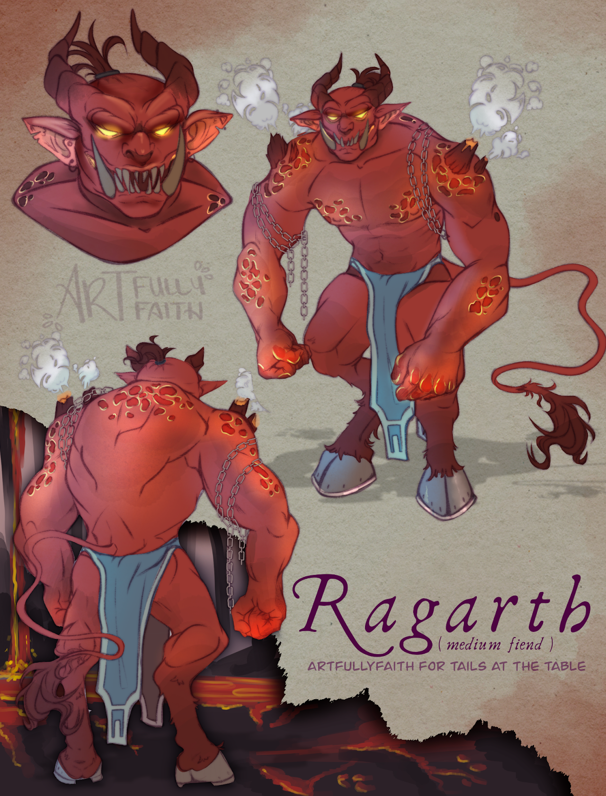
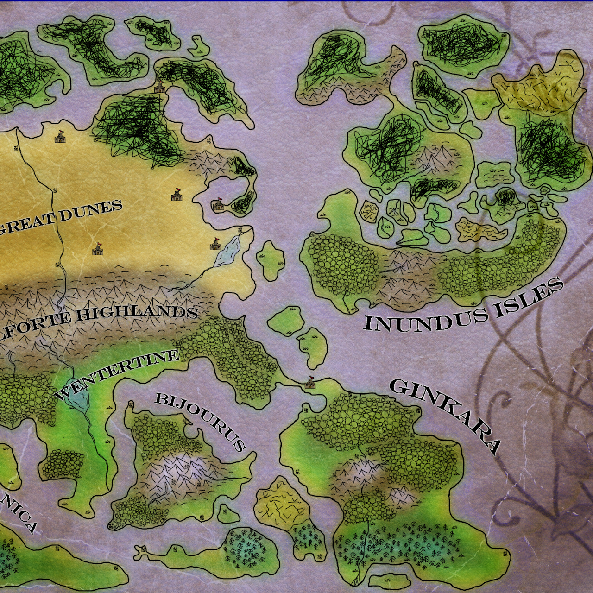
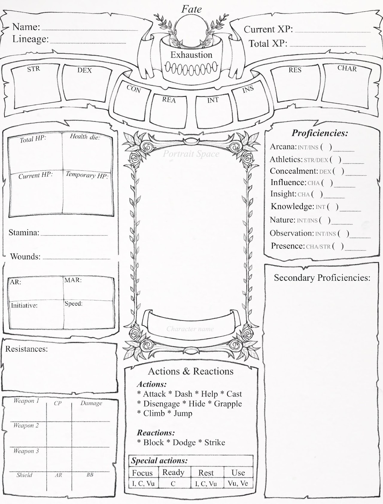

01Ragarth
Character art by ArtfullyFaith for the world of Fate’s Crossing.
06 / Worlds in the works
A growing fantasy world with room for games, stories, campaigns, secrets, and all the strange things that live just beyond the map.

Anvirya’s Chronicles
The long game
Worldbuilding is Colton’s ongoing creative rabbit hole. Vermillia is the foundation for a tabletop roleplaying game, campaign settings, a developing novelization, art, and a stage play.
Fate’s Crossing, developed with Malcolm Settle, puts a focused lens on tabletop roleplaying: grittier, more immediate, and built to give a distinctive world real weight at the table. Vermillia will continue to open outward through new rules, art, stories, settings, campaigns, and adventures made to share with friends.
World documents

01Character art by ArtfullyFaith for the world of Fate’s Crossing.

02An original Fate’s Crossing character sheet, illustrated by PlagueWitch.
Join Mikhael on a desperate quest to repair the kingdom she serves—and prove herself to her deity.